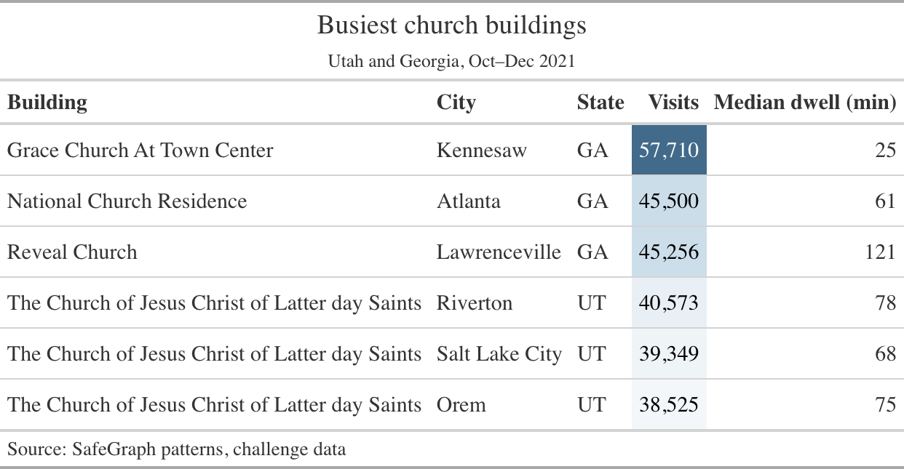
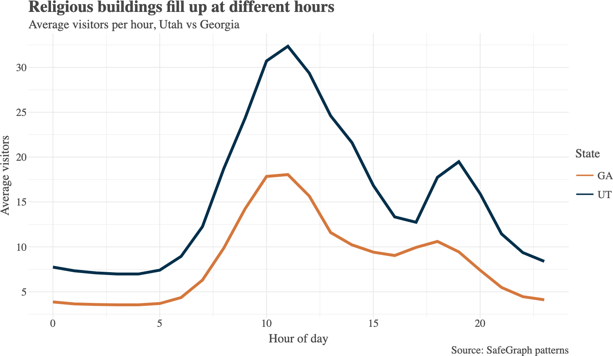

Day 4: Charts, tables, due dates, and proposal time
The chart is the argument. A weak visual weakens it.
Compare church buildings in Utah and Georgia. Answer at least three:
related_same_day_brand for each grouprelated_same_day_brand for temples, seminaries, and meetinghousesEach answer: code, a visualization, the first five rows charted, and a few sentences of insight.
Who will put a chart on the screen?
Tell us the question, then the point your chart makes. We’ll talk about what the chart does well and what would make the point land harder.
Use a chart
Use a table
A table is a visual too. It deserves the same care: aligned numbers, real labels, a title that says the point.

Made with Great Tables (pip install great-tables), which works directly with Polars.

Made with Lets-Plot (pip install lets-plot), a grammar-of-graphics library like ggplot2.
| Package | Good for |
|---|---|
| Plotly Express | Quick interactive charts. Required for this challenge. |
| Lets-Plot | Grammar of graphics, close to ggplot2 |
| Great Tables | Presentation-ready tables from Polars |
Both example figures on the last two slides came from your challenge data. The script is in img/example_figures.py.
Let’s open Canvas together and compare it to the class repository.
Tell me now if a date is wrong. Fixing it later costs you more than it costs me.
Due 9/29. Challenge repository
This is a decision-point presentation. Make your point early, then justify it.
Work on the proposal. I’ll come around.
Come find me with: your client, your unit of analysis, and the one chart you’d show them first.